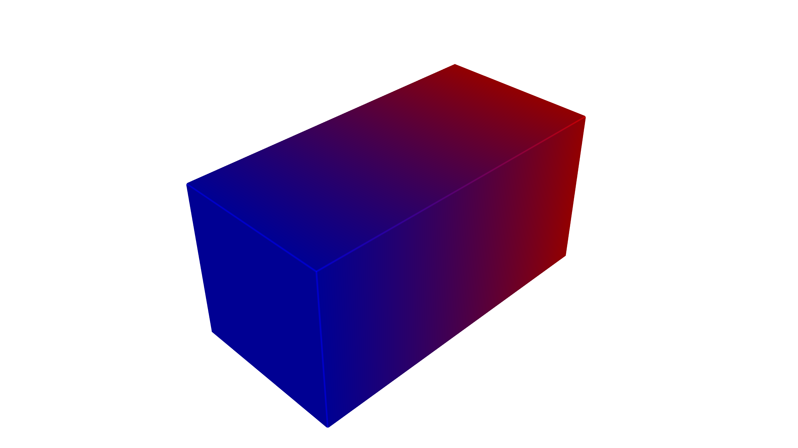
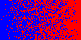

Material Inkjet Compiler#
The MaterialInkjetCompiler turns OpenVCAD designs with VOLUME_FRACTIONS into a stack of RGBA PNG images—one image per build layer—where each pixel encodes the resolved material (via your material table’s RGBA) for material-jetting style workflows.
This page is both a tutorial (from a valid design to PNG slices) and a reference for compiler behavior and Python API.
Prerequisites#
OpenVCAD installed with
pyvcadandpyvcad_compilers(see the installation guide and repositoryexamples/project_example).Familiarity with
VOLUME_FRACTIONSon geometry (see Getting Started with OpenVCAD, especially Lesson 6: Volume Fractions, and the Functional Grading Guide).
What this compiler is for#
Use Material Inkjet when you need discrete material assignment per voxel derived from a volume-fraction mixture at each point, exported as slice images for hardware or software that consumes layered PNG (or similar) stacks. Typical examples include multi-material jetting systems (often compared to PolyJet-class processes) and other pipelines that think in Z-ordered voxel planes.
If your goal is continuous RGB color per voxel through an ICC-aware pipeline that maps to CMYK + white + clear process inks, use the Color Inkjet compiler instead (COLOR_RGBA).
What “PNG stacks” means here#
After compilation you get one PNG file per Z layer in the voxel grid built from the scene’s bounding box:
Width × height of each PNG equals the X × Y voxel resolution for that job.
RGBA stores the material color from your
MaterialDefsfor the chosen material ID at that voxel—not a continuous mixture rendered as a color blend in the PNG (see Stochastic material choice below).File naming: each slice is written as your
file_prefixplus the layer index plus.pngin the output directory. Empty layers (no active voxels) are removed after the run to keep the stack smaller.Coordinate note: slice images may use an X-axis flip relative to world axes. If your downstream tool expects a different image handedness, you may need to account for that when interpreting files.
Pipeline overview#
The compiler voxelizes the model’s bounding box using your voxel_size, evaluates the implicit shape and VOLUME_FRACTIONS field on that grid, and writes one RGBA PNG per Z layer. Inside voxels get a single material pick from the local mixture (see below); outside voxels are left transparent in the slice. When the job finishes, you get resolution() and material_voxel_counts(), and empty slices are dropped from the stack.
Stochastic material choice#
Where VOLUME_FRACTIONS define a mixture of materials, the PNG does not store fractional blending. The compiler performs a weighted random choice among materials according to the local mixture. Fine voxels can still look noisy when two materials are mixed—this is normal for this representation.
Liquid keep-out#
If liquid_keep_out_distance > 0, the liquid material is removed from the local mixture when the sample lies within that distance of the surface (using the signed distance). Your MaterialDefs must include a material named "liquid" in that mode, or construction raises an error. Use this when your process should avoid assigning liquid near boundaries.
Missing VOLUME_FRACTIONS inside the solid#
This behavior is separate from the up-front check that the design exposes VOLUME_FRACTIONS at the root. Review Lesson 6: Volume Fractions for how the attribute is attached, and Lesson 7: The Node Hierarchy and Attribute Priority for how unions and overrides affect which regions inherit VOLUME_FRACTIONS—which is why one branch of a union can be “missing” data even when another branch is not:
Default: if a voxel is inside the solid but
VOLUME_FRACTIONSare not defined there, the compiler usesfallback_material_id(default 0, typically void in the default material table) and still treats the voxel as active.set_strict_mode(True): raisesRuntimeErroron the first inside voxel that lacksVOLUME_FRACTIONS, including the world-space location in the message.
If the VOLUME_FRACTIONS name never appears on the root attribute list at all, compile() fails before voxelization. See examples/attributes_by_type/undefined/material_inkjet_example.py for a union where only one child carries VOLUME_FRACTIONS.
Tutorial: design to PNG slices#
The scripts for this walkthrough live under examples/compilers/material_inkjet/ in the repository.
1. Build geometry with VOLUME_FRACTIONS#
Use pv.VolumeFractionsAttribute with expressions and material IDs from pv.default_materials (or your own MaterialDefs JSON). Fractions at each point should sum to 1 (see Lesson 6: Volume Fractions).
2. Choose voxel_size#
voxel_size is a Vec3 of voxel edge lengths in millimeters (same unit convention as the rest of OpenVCAD). Resolution in each axis scales with bounding box extent ÷ voxel size. Finer voxels increase memory and file count.
For inkjet workflows, voxel_size is often set to match your printer’s native voxel or slice resolution (or an integer fraction of it) so the stack aligns with what the machine or RIP expects.
3. Run the compiler#
import os
import shutil
import pyvcad as pv
import pyvcad_compilers as pvc
import pyvcad_rendering as viz
materials = pv.default_materials
cube = pv.RectPrism(pv.Vec3(0, 0, 0), pv.Vec3(20, 10, 10))
fraction_gradient = pv.VolumeFractionsAttribute(
[
("x/20 + 0.5", materials.id("blue")),
("-x/20 + 0.5", materials.id("red"))
]
)
cube.set_attribute(pv.DefaultAttributes.VOLUME_FRACTIONS, fraction_gradient)
root = cube
voxel_size = pv.Vec3(0.15, 0.15, 0.15)
output_dir = os.path.join(os.path.dirname(__file__), "output")
prefix = "slice_"
if os.path.isdir(output_dir):
shutil.rmtree(output_dir)
os.makedirs(output_dir, exist_ok=True)
compiler = pvc.MaterialInkjetCompiler(root, voxel_size, output_dir, prefix, materials, 0.0)
def on_progress(p):
print("compile progress: {:.1f}%".format(100.0 * p))
compiler.set_progress_callback(on_progress)
compiler.compile()
print("resolution (x, y, z png count):", compiler.resolution())
print("material voxel counts:", compiler.material_voxel_counts())
viz.Render(root, materials)
After compile(), output/ contains the PNG stack. Inspect a slice in any image viewer; Z order follows the file index.
From the repository root, with the project virtual environment activated: python examples/compilers/material_inkjet/01_basic_png_stack.py runs the compile and then opens the interactive preview (viz.Render does not return until you close the window). To verify only the compile step, temporarily comment out the final viz.Render line.
4. Preview in the renderer#
With viz.Render(root, materials), use the renderer’s attribute selection to view VOLUME_FRACTIONS as usual. The PNG stack, however, shows picked materials per voxel, not the continuous mixture.
Reference: Python API#
Constructor#
MaterialInkjetCompiler(root, voxel_size, output_directory, file_prefix, material_defs, liquid_keep_out_distance=0.0)
Argument |
Meaning |
|---|---|
|
Root |
|
|
|
Folder to create/write PNGs into. |
|
Prefix for slice filenames ( |
|
|
|
Distance (mm) for liquid keep-out; |
Methods (including CompilerBase)#
Method |
Role |
|---|---|
|
Run the full pipeline. |
|
Names this compiler requires (includes |
|
Request cooperative cancellation. |
|
|
|
|
|
|
|
Require |
|
Material ID when strict mode is off and samples are missing. |
For full autodoc signatures, see the pyvcad_compilers section (MaterialInkjetCompiler and CompilerBase).
Figures#
Design preview (interactive renderer; same scene as the example script):
VOLUME_FRACTIONS (preview)

Example slices from the compiled PNG stack (same Z layer index in the middle of the stack; same scene as the tutorial, different voxel_size). Smaller voxels increase in-plane resolution and make smooth VOLUME_FRACTIONS gradients look less blocky at pixel scale (at the cost of more layers and longer compile times):
Slice — 0.15 mm voxels

Slice — 0.05 mm voxels

Limitations#
One discrete material per voxel in the output; mixtures become stochastic picks, not blended colors in the PNG.
Effective resolution is tied to
voxel_sizeand bounding box; fine spatial detail needs sufficiently small voxels.Asymmetric
voxel_sizecomponents are allowed—treat X, Y, and Z resolution separately.Root attribute list must include
VOLUME_FRACTIONS; missing per-voxel samples are handled by strict / fallback and are a different situation than the attribute never appearing on the tree.
Further examples#
examples/compilers/material_inkjet/01_basic_png_stack.py— end-to-end compile + render (this guide).examples/attributes_by_type/undefined/material_inkjet_example.py— default fallback, custom fallback, and strict mode with partialVOLUME_FRACTIONSon a union.